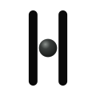
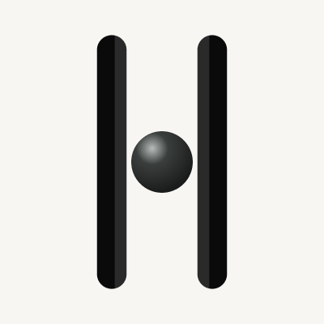
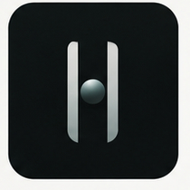
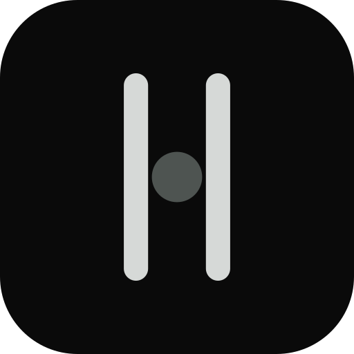
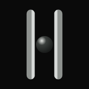
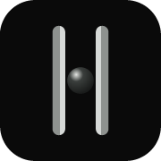
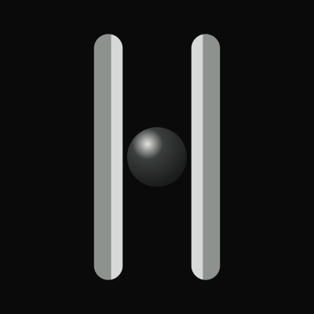
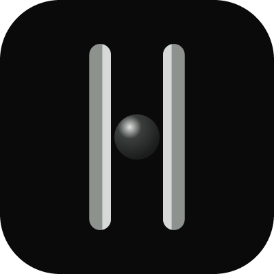

Final finish-only pass. Source occupancy unchanged (pillar 11 / gap 26.2 / r 11.4 / height 94). Two corrections only: the slot-facing inner plane is a ~40% Charcoal / Mist face, wide enough to read at 180/400 without becoming chrome; the bead is the object in the slot on both grounds — brighter matte pole, lighter-than-column on void, pewter body and terminator. No glow, no teal. 1-bit members+ring is mono fallback only. Type is not frozen.









Live Fraunces (opsz 144, SOFT 0) for comparison: Waking Matter
Shipping brand/logos/lockup*.svg still carry Newsreader outlines and are not a type freeze.
Parent master is the modeled two-value mark, not the ring. Hole-in-aperture is still invisible at Source occupancy. Mono fallback is unchanged this pass.
Finish pass 3. Geometry still frozen. Finish not frozen.
Ask whether the inner face now reads at 180/400 as columns around a slot, and whether the bead is the object on both grounds, without chrome, glow, or teal. Do not reopen geometry. Do not resume Phase B. Live main is untouched.